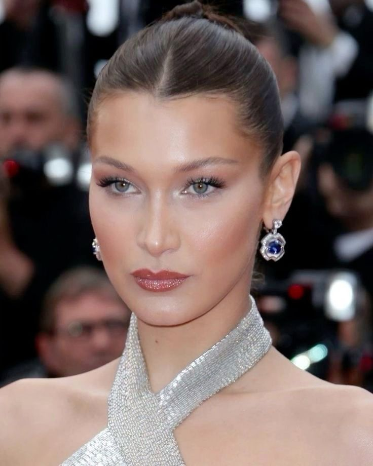

Inspirasi makeup-ku datang dari gaya Bella Hadid yang menonjolkan keanggunan alami, tampilan minimalis, dan hasil akhir yang terlihat effortless. Gaya ini membuatku tertarik untuk belajar lebih dalam tentang teknik makeup yang bisa mempertegas fitur wajah tanpa berlebihan.
Aku mulai bereksperimen dengan berbagai produk, mulai dari foundation hingga contour, dan belajar bagaimana pencahayaan serta warna kulit berpengaruh pada hasil akhir. Selain itu, aku juga sering mengikuti tren makeup dari kreator di TikTok dan Instagram.